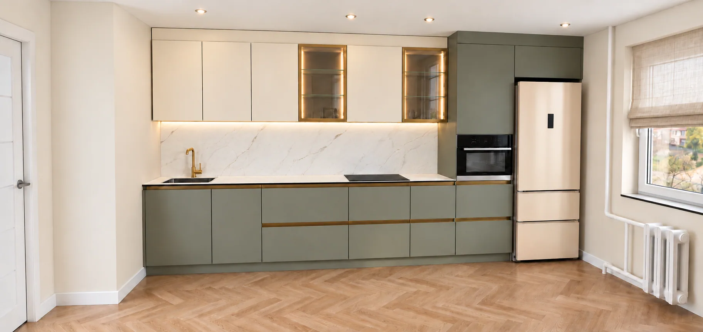
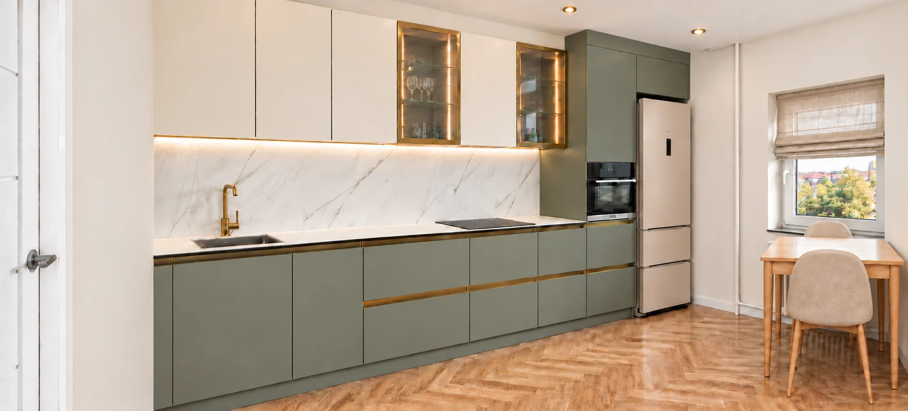
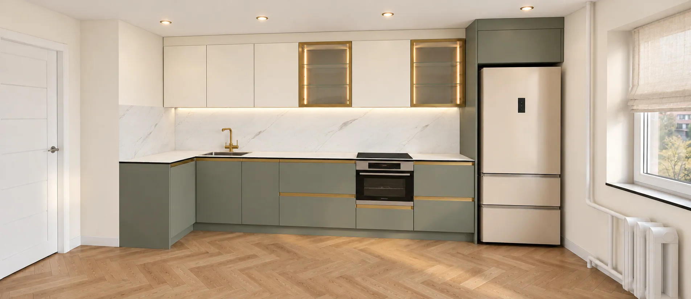
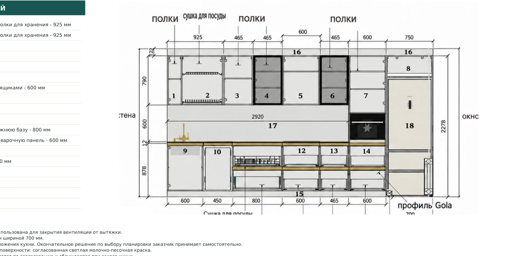
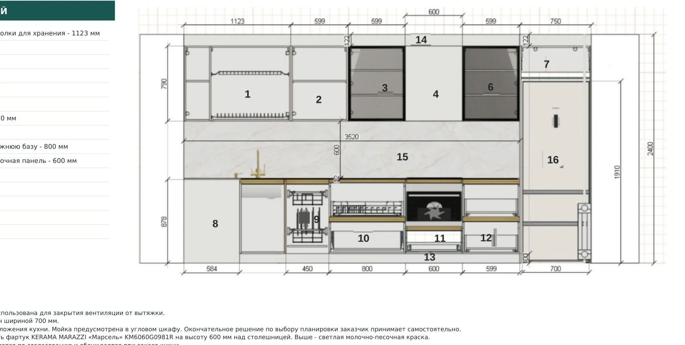
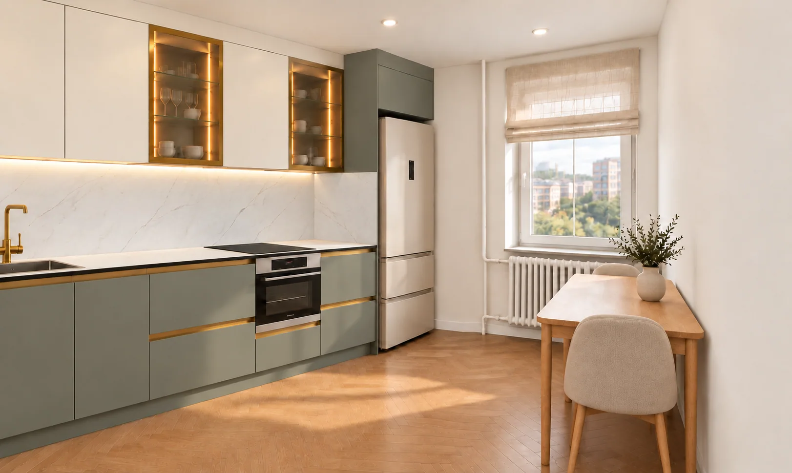
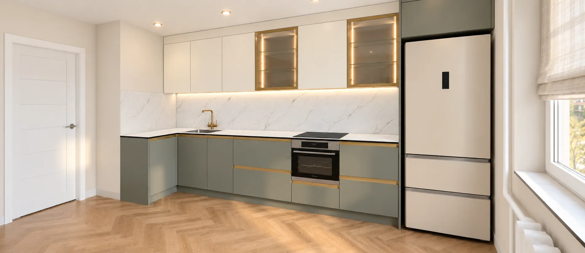
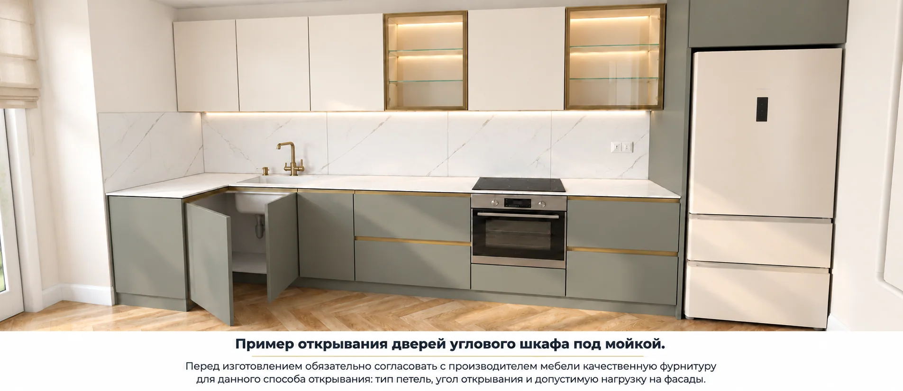

Вариант 1 · Прямая кухня
Духовой шкаф расположен в колонне, что облегчает доступ к технике без глубокого наклона. Сравниваем удобство с альтернативой, а не только внешний вид фасадов.
3D-визуализация прямой кухни.
Одно помещение — два решения. Сравниваем прямую кухню с духовкой в колонне и угловую с дополнительной рабочей поверхностью. Показываю не только визуализации, но и конструкцию мебели.

Видео содержит текстовые пояснения и музыкальный фон. Все изображения — 3D-визуализации и фрагменты технического проекта.

Духовой шкаф расположен в колонне, что облегчает доступ к технике без глубокого наклона. Сравниваем удобство с альтернативой, а не только внешний вид фасадов.
3D-визуализация прямой кухни.

Поворот гарнитура добавляет рабочую поверхность. Но требует отдельной проверки доступа под мойку, открывания угловой секции, духовки и соседних шкафов.
3D-визуализация угловой кухни.
Перед изготовлением проверяются состав модулей, размеры, внутреннее наполнение, открывание фасадов и техники. Ниже — фрагменты исходных технических чертежей без персональных данных заказчика.

Прямой вариант. Схема внутреннего наполнения.

Угловой вариант. Схема внутреннего наполнения.
Размеры на эскизных планах требуют проверки контрольным обмером и окончательного согласования при заказе.
Это расстояние от края стола до противоположной стороны с учётом глубины столешницы 630 мм и стола 650 мм. И это без учёта стула и сидящего человека. Поэтому для данного решения показан компактный стол и два стула у окна, а не мягкая зона.

Фасады RAL 7033 (приглушённый серо-зелёный) и RAL 1013 (жемчужно-белый), золотистые детали, подсветка витрин, светлый дуб и молочные стены. Для угловой кухни предусмотрен фартук «Марсель» с продолжением на стену 1190 мм. Итоговое сочетание всегда утверждается по реальным образцам.

Фактуры и подсветка на 3D-визуализации.

Доступ к угловому шкафу: подлежит технологической проверке.
Напиши «КУХНЯ», пришли город, размеры помещения и пожелания. Я помогу сравнить варианты для твоего пространства. Дизайн-проекты — онлайн по всей России; изготовление мебели — Нижний Новгород и область.
Катерина Белякова · МАКСимум мебель
Тел.: +7 915 953-09-29 · +7 910 799-64-71
Написать ВКонтактеОткрыть MAX